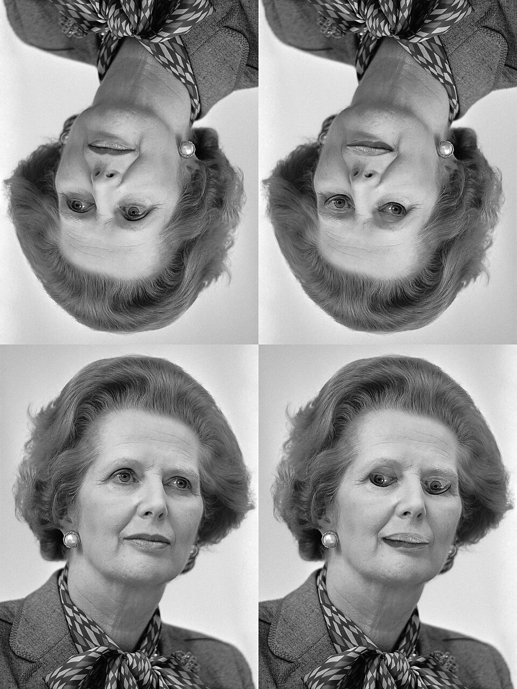

The Thatcher effect, or Thatcher illusion, is a phenomenon in which changes to facial features are difficult to detect when a face is upside-down, even though the same changes are obvious in an upright face. It is named after the then British prime minister Margaret Thatcher, on whose photograph the effect was first demonstrated. The effect was originally created in 1980 by Peter Thompson, professor of psychology at the University of York.
The Thatcher effect is thought to be due to specific psychological cognitive modules involved in face perception which are tuned especially to upright faces. Faces seem unique despite the fact that they are very similar. It has been hypothesized that we develop specific processes to differentiate between faces that rely as much on the configuration (the structural relationship between individual features on the face) as the details of individual face features, such as the eyes, nose and mouth.
Explore the Illusion